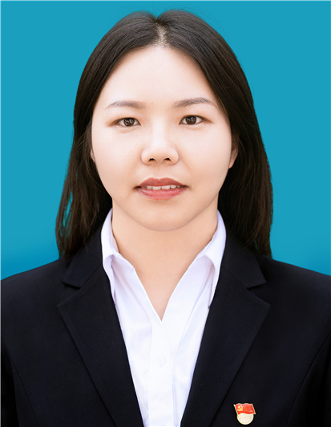
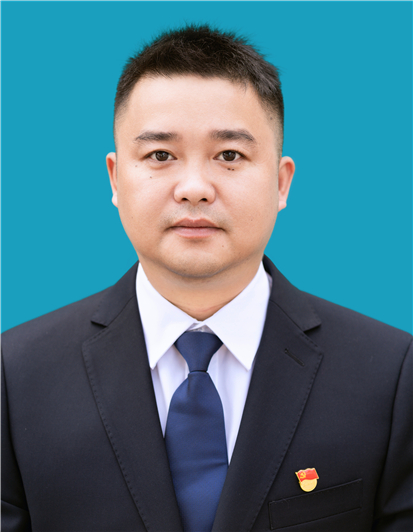
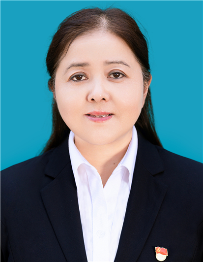

职务：党委书记、村委会主任
政治面貌：中共党员
分工情况：负责全面工作，主抓党务、经济工作、移民工作、招商引资、意识形态、财务制度执行、三资管理。
职务：党委委员、纪委书记、村监委会主任
政治面貌：中共党员
分工情况：主管党务村务财务督查、党务工作、组织工作、村纪委、监委工作、党风廉政和反腐败工作、基础设施建设、乡村振兴、拆迁工作，分管远程、农民夜校，完成村两委交办的其他工作。
职务：党委委员、村委委员
政治面貌：中共党员
分工情况：主管农业、水利、电力、畜牧工作、建设规划、国土工作、司法调解；分管股份经济合作社、网格、广播，完成村两委交办的其他工作。
职务：党委委员、纪委委员、妇联主席
政治面貌：中共党员
分工情况：主管妇女儿童、旅游体育、精神文明、教育、卫生防疫、宣传工作、工会工作、分管信息报送、民政、残联，完成村两委交办的其他工作。
职务：党委委员、治保主任
政治面貌：中共党员
分工情况：主管信访稳定、综治、防邪、禁毒、武装民兵、交通管理、安全、环境保护、环境治理；分管共青团工作、重精管理完成村两委交办的其他工作。
职务：村委委员、村文书
政治面貌：中共党员
分工情况：主管文秘工作、档案管理、人大工作、村社财务管理及农经农统工作；分管报账员、巩固脱贫工作、股份经济合作社财务管理，完成村两委交办的其他工作。
